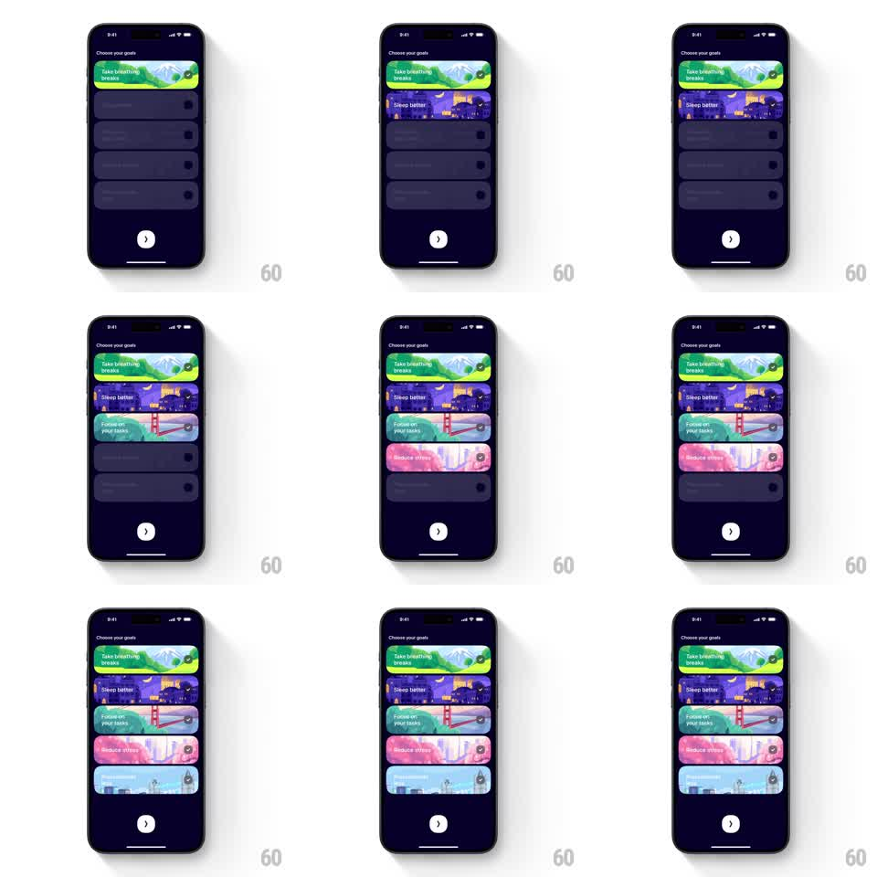

Media
Frame-by-frame

Rebuild this interaction 1:1: Mindllama's goal picker - dark pill cards that flip to vibrant illustrated cards with a checkmark pop when tapped, stacking down the list as you select.

Rebuild this interaction 1:1: Mindllama's goal picker - dark pill cards that flip to vibrant illustrated cards with a checkmark pop when tapped, stacking down the list as you select.
## Integration
Integration: stack-agnostic spec - springs given as stiffness/damping, timed motions as duration + curve; map every value to your framework and animation library of choice.
## Scene
Dark navy "Choose your goals" screen: a vertical stack of large pill cards. Unselected cards are flat dark gray with faint text and an empty circle checkbox at right. Selected cards reveal full-bleed illustrations - green breathwork scene ("Take breathing breaks"), purple night city ("Sleep better"), teal bridge ("Follow on your tasks"), pink waterfall ("Reduce stress"), light blue city - with the title over the art and a filled check at right. A circular arrow button sits bottom center.
## Motion spec
Pattern: tap-to-reveal illustrated selection.
- Tap an unselected card: its illustration fades in (300ms, ease-out) over the dark card while the card background color washes in with it - the art appears in place, no slide.
- The checkbox pops to a filled check: scale 0.6 to 1.2 to 1.0 (250ms) with the checkmark stroke drawing (~150ms).
- The card does a single subtle press-bounce on tap (scale 0.98 to 1.0, spring stiffness ~400, damping ~20).
- Tap again to deselect: illustration fades back out to the dark card (250ms), check unpops.
- Multiple selections stack independently; the bottom arrow button enables (opacity 0.4 to 1.0) once at least one goal is selected.
## Calibration
- Illustration fade and check pop start together; the check finishing slightly late reads as confirmation.
- Keep unselected cards truly dark - a dimmed illustration reads as disabled, not unselected.
## Reduced motion
Selection is a 150ms background crossfade; checkbox toggles without pop.
## Don't miss
- Each goal has its own illustration and color world; never reuse one art across cards.
- Card height and position never change on selection - only fill and checkbox.